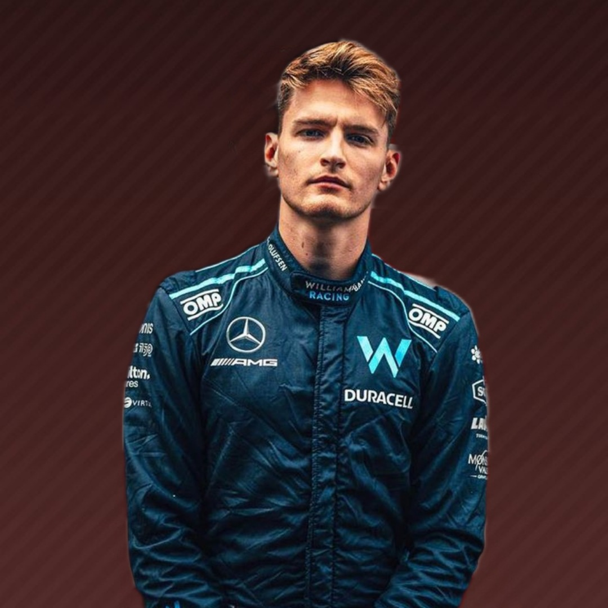

23
Alex Albon

Anteriormente conocida como Williams F1 Team y tradicionalmente como Williams Grand Prix Engineering, es un equipo de Fórmula 1 creado en 1977 por Frank Williams y Patrick Head, al asociarse con Walter Wolf Racing. Todos los coches de Williams son llamados "FW-número", por las iniciales del fundador del equipo, Frank Williams. Williams es considerado uno de los cuatro grandes equipos de la Fórmula 1, junto con Ferrari, McLaren y Mercedes Benz. La primera carrera de la escudería fue en el Gran Premio de España de 1977, cuando el equipo corrió con un chasis March y Patrick Nève como piloto. Williams comenzó a construir sus propios monoplazas el año siguiente. El suizo Clay Regazzoni ganó la primera carrera para el equipo en el Gran Premio de Gran Bretaña de 1979, mientras que en el Gran Premio de Gran Bretaña de 1997, el canadiense Jacques Villeneuve ganó la carrera número 100 para el equipo. De esta manera, Williams se convirtió, en ese momento, en uno de los únicos tres equipos en Fórmula 1, junto con Ferrari y McLaren, en ganar 100 carreras. Siete pilotos han sido campeones del mundo con Williams: Alan Jones, Keke Rosberg, Nelson Piquet, Nigel Mansell, Alain Prost, Damon Hill y Jacques Villeneuve. A su vez, el equipo ganó 9 títulos de constructores entre 1980 y 1997. Este fue un récord hasta que Ferrari lo superó en el año 2000. Los últimos años no han sido muy exitosos para la escudería, en 2020 han logrado dar un paso adelante, aunque la familia Williams ha tenido que dar un paso al lado y salir del equipo. Con la idea de seguir mejorando se enfrentan a la temporada 2023, contando con el recientemente regresado a la categoria Alex Albon y con una joven promesa debutante que carga en sus hombros con la responsabilidad de representar a los EEUU, Logan Sargeant. Juntos trabajaran para tratar de devolver a Williams al lugar que merece.